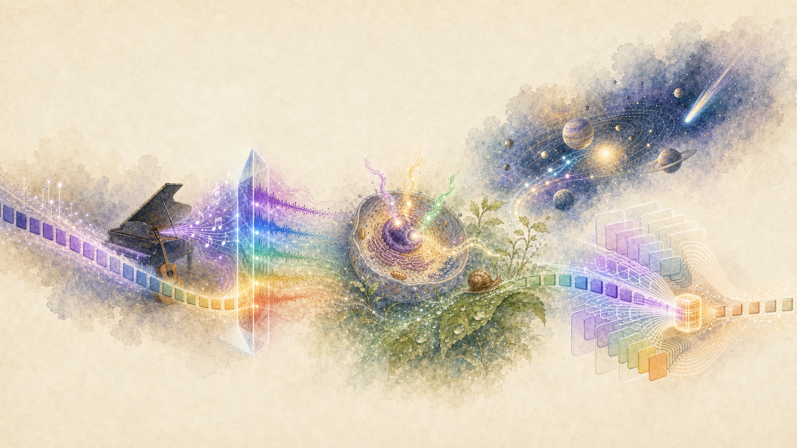
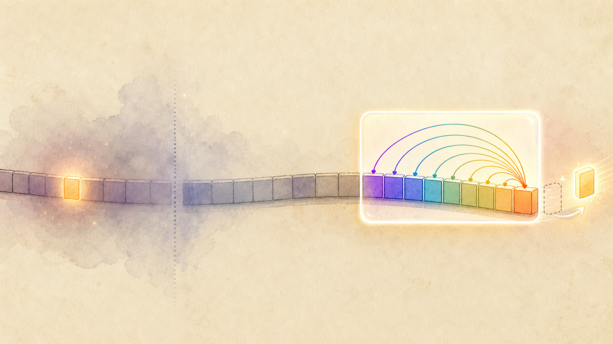
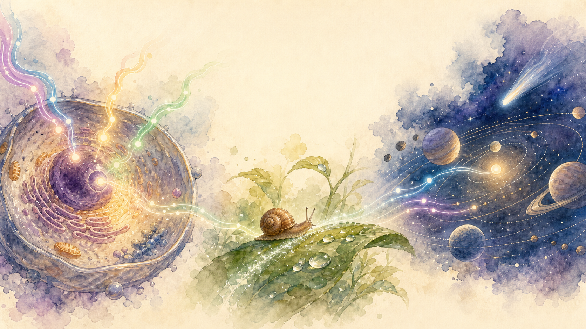
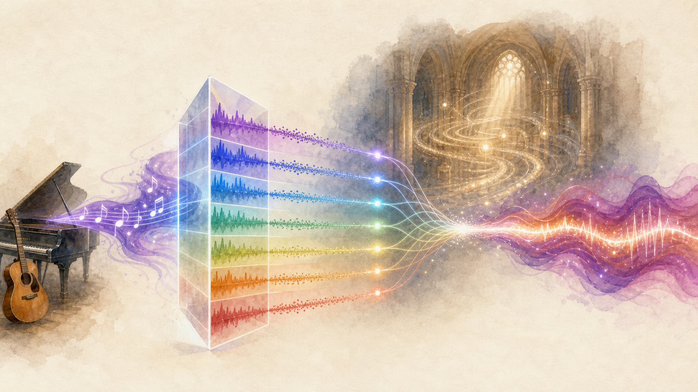
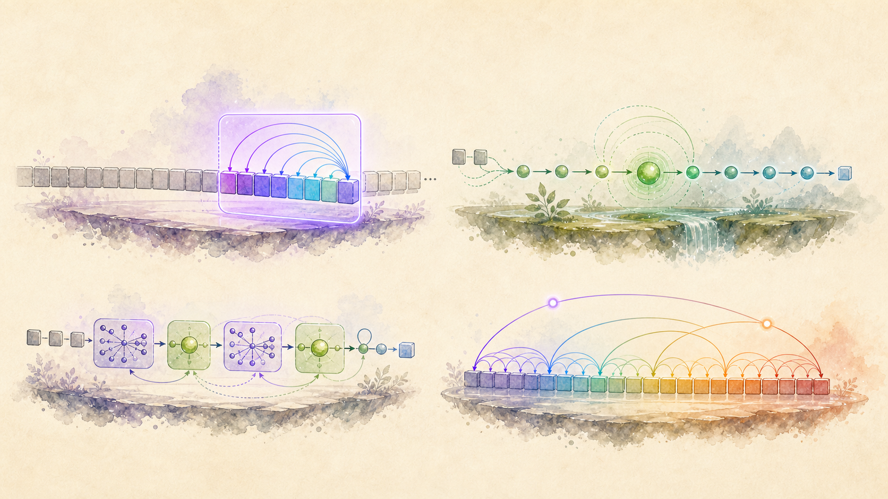

Today we are going to learn how to reduce KV cache across tokens. This is a wonderful journey:
it will take us through sliding windows, music, nature, state space models, and the modern architectures
that turn long memory into something compact.
We will hear convolution as music, see state as nature, and then return to inference with a new intuition:
memory does not always need to be a growing list of tokens.

Music
Convolution becomes easier when a song is split into frequencies.
Nature
A cell, a path, and an orbit all carry state through time.
Memory
Modern models compress the past instead of storing every token forever.
Last classReduce heads
Fewer KV heads: MQA, GQA, MLA.
→
TodayReduce tokens
Keep fewer past tokens, or compress them.
→
DestinationFixed state
Decode by updating a compact memory.
Chapter 1
The KV cache has two obvious axes
For a decoder-only Transformer, each generated token leaves behind two souvenirs in every layer:
a key vector and a value vector. If you generate more tokens, the cache grows. If you use more KV
heads, the cache grows. If your head dimension is larger, the cache grows.
KV cache per layer ~= 2 × N × Hkv × dhead × bytes
Head-axis reduction
MQA, GQA, and latent attention reduce Hkv or compress the K/V representation.
You still store something for every token, but each token leaves a smaller footprint.
Token-axis reduction
Sliding windows store only recent tokens. Linear attention and SSMs go further: they replace
the growing token list with a state that can be updated in place.
Lecture map
We will first do the simple thing: keep only the last W tokens. Then we will ask a deeper question:
can we avoid caching individual tokens altogether and cache a compressed state instead?
Chapter 2
Sliding Window Attention
Sliding window attention says: for the new token, do not attend to the entire past. Attend only to
the previous W tokens. Everything older than the window is outside the direct attention view.

Intuition
The new token sees a bright recent window. A far-back clue still exists, but it is no longer directly visible.
Only the last W tokens are visible
The important part is that the visible past is not fixed. As every new token arrives, it becomes
the current query, and the attention window slides with it. The model keeps a rolling buffer of the
last W keys and values; tokens that fall out of that buffer are no longer directly visible.
Decode step
Token arrives, window moves
Press play to watch the set of visible past tokens change with every new query.
W = 4
Rolling KV cache
query tokenvisible pastdropped from windowimportant old clue
O(W)
Decode reads only W keys and values per local layer, not N.
N/W
For long contexts, the cache reduction is roughly N divided by W.
8x
Example: N = 32K tokens, W = 4K tokens gives about 8x less local-layer KV cache.
What exactly gets saved?
Full attention cache
2 × N × Hkv × dhead
If N keeps growing, the KV cache grows with N. A new query can look anywhere, but memory and read bandwidth keep increasing.
Sliding window cache
2 × min(N, W) × Hkv × dhead
A rolling buffer keeps only the recent window for local-attention layers. Once N > W, the cache stops growing for those layers.
Important nuance: if a model alternates local layers with global layers, only the local layers get the W-sized cache.
The global layers still need a longer cache. So the total saving depends on the layer mix.
The drawback, in a sentence you will remember
Sliding window attention is like reading a mystery novel with a ruler covering everything except the last few lines.
It is fast. It is cheap. But if the clue was in chapter one, you may confidently miss the answer.
The far clue
"The antidote is hidden under the violet bridge." Thousands of tokens later: "Where should Mira look?"
If "violet bridge" is outside W, the new token cannot directly attend to it.
The local clue
"She opened the blue box and found the key. Where was the key?" This is exactly where sliding windows shine:
recent local details are still inside W.
Intuitive failure modes: old variable definitions in code, early instructions in a system prompt,
names introduced at the beginning of a story, or a legal clause cited once and used much later.
Stacked layers can pass information forward gradually, but the new token loses the clean one-hop lookup
that full attention provides.
Models that use local/global or hybrid ideas
The practical pattern is not "always local" or "always global." Recent efficient architectures often mix
local attention with occasional global attention, or mix attention layers with state-space layers.
Mistral 7B
Uses grouped-query attention and sliding window attention to reduce inference cost while supporting long sequences.
Gemma 2
Interleaves local attention with global attention, and uses GQA. Local layers use a sliding window.
Jamba
This is closer to your Mamba intuition: it mixes Transformer attention layers with Mamba SSM layers.
Pure Mamba does not alternate sliding-window and full attention; hybrids such as Jamba combine the families.
Prerequisite 1
State Space Models appear whenever a state evolves
Before we go deeper, forget neural networks for a moment. A state space model is the simplest story:
the world has a hidden state, and every new input nudges that state forward.

State + input
A cell, a snail, and a solar system all carry state. External inputs change the state; the next state changes the future.
ht = A ht-1 + B xt
yt = C ht
Bio
A cell
The state is the cell's internal chemistry. External inputs are nutrients, hormones, stress signals.
The output is what the cell does next: divide, repair, signal, or rest.
Nat
A snail trail
The state is position, moisture, energy, and trail history. Each patch of leaf changes the next move.
The path is not stored as a giant list; it is carried forward as state.
Orb
A planet
The state is position and velocity. Gravity is the input that bends the future. The orbit is generated
by repeatedly updating the state.
ht-1
What the system remembers so far.
+
xt
The new external input.
→
ht, yt
Updated memory and output.
Bridge to sequence models
A language model can also be seen this way. The input is the next token embedding. The hidden state is
the compressed memory of the prompt. The output is the representation used to predict the next token.
Prerequisite 2
Convolution: the musical shortcut
Let us start like a music producer, not like a mathematician. Take a familiar melody such as
Twinkle, Twinkle, Little Star. Now imagine you want to remix it so it sounds like it is being
sung inside a concert hall. That reverb effect is convolution.

Producer's question
How do we take a dry melody and add the echo character of a concert hall without doing a huge amount of repeated work?
First principles: from melody to remix
When people hear a song, they think in melodies: C, C, G, G, A, A, G.
But an audio editor cannot apply reverb to the idea of a note. It applies reverb to the actual sound wave
coming from the singer or instrument. So we zoom in from the melody to the wave.
Step 1 - Start with a melody people know
Twinkle, Twinkle becomes notes, then a wave
At the musical level, the first phrase is just a sequence of notes. But when someone sings the first
C, the microphone does not store the word "C". It stores the shape of the air vibration.
Think of it like taking many tiny snapshots of the wave while the note is being sung.
melody → sound wave → x0, x1, x2, ...
Twinkle, Twinklefirst phrase as notes
C
C
G
G
A
A
G
Zoom into the first sung C: these are tiny wave snapshots.
x00
x13
x27
x39
x47
x53
The x's are not lyrics or notes. They are tiny snapshots of the sung wave.
Step 2 - Add a concert-hall remix
The reverb preset is an echo recipe
Suppose the dry melody is too plain, so we choose a Concert Hall reverb preset.
That preset says: keep the sound now, add a strong echo one snapshot later, a softer echo two snapshots later,
and a tiny tail three snapshots later.
concert hall preset = [1.0, 0.6, 0.3, 0.1]
Dry melody
C
C
G
G
A
A
G
+
Concert hall preset
now1.0
echo 10.6
echo 20.3
tail0.1
The preset is the list of echo strengths we will apply to the wave.
Step 3 - What convolution means here
Each output point mixes the present and the echoing past
Let y4 be the remixed wave at snapshot 4. What should it contain?
The current dry sound x4, plus the first echo of x3,
plus the second echo of x2, plus the tiny tail of x1.
That is the weighted-past idea.
y4 = 1.0x4 + 0.6x3 + 0.3x2 + 0.1x1
x1 0.1
x2 0.3
x3 0.6
x4 1.0
=
y4
The output at snapshot 4 is the current wave plus echoes arriving from earlier snapshots.
Step 4 - Now do the same for the whole zoomed wave
Convolution is just repeating the y4 recipe
Nothing new happens after y4. To create the remixed wave, we calculate
y0, then y1, then y2, and so on.
Every output point uses the same concert-hall recipe; the recipe simply lines up with a different part
of the dry wave.
same recipe, shifted one snapshot at a time
y0 = 1.0x0
y1 = 1.0x1 + 0.6x0
y2 = 1.0x2 + 0.6x1 + 0.3x0
y3 = 1.0x3 + 0.6x2 + 0.3x1 + 0.1x0
y4 = 1.0x4 + 0.6x3 + 0.3x2 + 0.1x1
y5 = 1.0x5 + 0.6x4 + 0.3x3 + 0.1x2
This list of y values is the dry Twinkle wave after the concert-hall preset.
Step 5 - Why the direct method can become slow
The cost is hidden inside those repeated y calculations
Look at the formulas above. Each y scans across the echo weights
1.0, 0.6, 0.3, 0.1. With 6 wave snapshots and 4 echo weights, the direct method
does about 6 x 4 small multiply-adds. In general:
N wave snapshots × R echo weights = O(NR)
If the concert-hall tail is long, R can become very large. When
R grows like N, the direct remix has the
N x N = O(N^2) shape.
Toy remix: 6 wave snapshots x 4 echo weights
Rows are wave snapshots. Columns are echo weights. Direct convolution fills this work grid.
Step 6 - The shortcut idea, still using Twinkle
Use the same preset, but change the route
We are not changing the remix. We still want Twinkle + concert hall.
The shortcut only changes the route. Instead of calculating every y point one by one,
first describe the dry Twinkle wave as a sum of pure-tone layers: low, middle, and bright sine/cosine waves.
Then describe the concert-hall preset by how it treats those same pure-tone layers. Does the hall keep
low tones ringing? Does it soften bright tones? This is still the same reverb preset, just written tone by tone.
Dry Twinkle tone layers
bass
mid
treble
How much low, mid, and bright pure tone is in the dry melody?
×
Hall preset response
bass
mid
treble
How does the concert-hall preset treat each tone family?
Step 7 - Multiply, then recombine
Same output, less repeated work
Now the remix becomes: dry Twinkle's low tones times the hall preset's low-tone response,
dry Twinkle's mid tones times the hall preset's mid-tone response, and dry Twinkle's bright tones times
the hall preset's bright-tone response. Then add those modified tone layers back into a wave.
Apply the hall response to each matching tone layer.
→
Concert hall Twinkle
Recombine into the remixed wave.
Start here: we are remixing Twinkle, Twinkle with a concert-hall preset. Convolution is how the dry wave receives the echo tail.
First: what does frequency domain mean?
Before the concert hall and before the FFT, start with a tiny sequence of numbers. The time view says:
here is the value at step 0, step 1, step 2, and so on. The frequency view says something different:
can this whole pattern be rebuilt by adding simple sine and cosine waves?
A sequence in time
Let M = 8 and
x = [3, 5, 3, 1, 3, 5, 3, 1].
These are eight measurements of a little wave. The numbers rise, fall, and repeat.
n = 03
n = 15
n = 23
n = 31
n = 43
n = 55
n = 63
n = 71
Time view: values over steps
This is the direct view: draw the eight numbers in order. Nothing mysterious yet.
Frequency view: rebuild with waves
The same eight-number shape can be rebuilt by adding a flat average line and a sine wave.
The important idea: add waves at every time step
A single time point is not separately "turned into a frequency." The whole sequence is represented as
a weighted sum of sine and cosine patterns. Then each time step is reconstructed by adding those patterns
at that same position.
xn = 3 + 2 sin(2π · 2n / 8)
For n = 0...7, this exactly gives
[3, 5, 3, 1, 3, 5, 3, 1].
n
0
1
2
3
4
5
6
7
average
3
3
3
3
3
3
3
3
sine
0
+2
0
-2
0
+2
0
-2
sum
3
5
3
1
3
5
3
1
Before the formula: which waves are even allowed?
Since we have M = 8 points, one full circle is divided into eight equal angles.
The step size is 2π / 8 = π/4 = 45°. The Fourier basis waves are made by walking
around this circle at different speeds: k = 0, k = 1,
k = 2, and so on.
k = 0flat wave
No rotation. This basis wave gives the average level.
k = 1one cycle
One sine/cosine cycle across the eight positions.
k = 2two cycles
This is the wave our toy sequence actually contains.
k = 6paired wave
The partner of k = 2, needed for a real-valued sine wiggle.
So yes: before doing any formula, the goal is clear. We already know the candidate waves. We need to find
the coefficients, meaning how much of each wave to add, so their sum recreates the original sequence.
The conversion formula
Xk = ∑n=0M-1 xn e-2πikn/M
This asks: how much of frequency k is inside the whole sequence?
The complex exponential is just a compact way to carry cosine and sine together.
The answer Xk is called a frequency coefficient. It is one
complex number that stores two things at once: how strong that frequency is, and what phase/shift it has.
You get it by multiplying the sequence against the k-th sine/cosine wave and
adding all the products.
eiθ = cos(θ) + i sin(θ)
The rebuild formula
xn = (1/M) ∑k=0M-1 Xk e2πikn/M
This walks back from frequency view to time view. It adds all frequency waves at position
n and recovers the original number xn.
Now apply the formula to the actual numbers
Use the same sequence:
M = 8,
x = [3, 5, 3, 1, 3, 5, 3, 1].
The conversion formula calculates one number Xk for each possible frequency
k = 0...7.
frequency coefficient = "score for one basis wave"
If the sequence lines up strongly with the wave for k = 2, then
X2 is large. If it does not line up with
k = 1, then X1 becomes 0.
The inverse formula uses these scores as mixing knobs: add this much of
k = 0, this much of k = 2, this much of
k = 6, and so on.
What is k? It is the frequency index
Because M = 8, the DFT tests eight basis waves.
k = 0 means no wave, just the flat average.
k = 1 means one cycle across the eight time steps.
k = 2 means two cycles across the eight time steps, and so on.
For real-valued sequences, high indices such as k = 6 act like negative-frequency partners;
k = 6 pairs with k = 2 to create the real sine wave.
k = 00 cycles
Flat average. Present here as X0 = 24.
k = 11 cycle
One full wave across the 8 positions. Cancels to 0 here.
k = 22 cycles
The visible wiggle. Present here as X2 = -8i.
k = 33 cycles
A faster wave. Cancels to 0 for this clean example.
k = 44 cycles
The alternating high-low pattern. Also 0 here.
k = 5-3 cycles
Partner view of a 3-cycle wave. 0 here.
k = 6-2 cycles
Partner of k = 2. Present as X6 = 8i.
k = 7-1 cycle
Partner view of a 1-cycle wave. 0 here.
Frequency k = 0: the average layer
When k = 0, the exponential is always 1. So the scan just adds every time value.
X0 = 3 + 5 + 3 + 1 + 3 + 5 + 3 + 1 = 24
In the inverse formula we divide by M = 8, so this becomes
24 / 8 = 3. That is the flat average line.
Frequency k = 2: the sine layer
For k = 2, the scan pattern is
1, -i, -1, i, then it repeats. This is the formula's way of checking
whether the sequence contains a wave that completes two cycles in eight steps.
n
0
1
2
3
4
5
6
7
xn
3
5
3
1
3
5
3
1
e-iπn/2
1
-i
-1
i
1
-i
-1
i
product
3
-5i
-3
i
3
-5i
-3
i
X2 = (3 - 3 + 3 - 3) + (-5i + i - 5i + i) = -8i
The final frequency-domain representation
The matching negative-frequency partner is X6 = 8i.
The other frequencies cancel to zero for this clean toy sequence.
k = 024
k = 10
k = 2-8i
k = 30
k = 40
k = 50
k = 68i
k = 70
frequency view = [24, 0, -8i, 0, 0, 0, 8i, 0]
How to read that list visually
Yes: the original sequence is rebuilt as a sum of the waves represented by these coefficients.
But remember the inverse formula divides by M = 8, and the complex pair
X2 plus X6 combines into one real sine wave.
X0 = 24flat wave
After dividing by 8, this contributes 3 at every time step.
X2 = -8i, X6 = 8isine wave
Together they contribute [0, +2, 0, -2, 0, +2, 0, -2].
X1, X3, X4, X5, X7 = 0silent waves
These basis waves are tested, but they add nothing to this sequence.
add the piecesoriginal x
[3,3,...] plus the sine wiggle gives [3,5,3,1,3,5,3,1].
Put only the non-zero coefficients into the inverse formula. Let
θ = 2π · 2n / 8 = πn/2.
xn = (1/8)[24 + (-8i)eiθ + (8i)e-iθ]
xn = 3 + [-i eiθ + i e-iθ] = 3 + 2 sin(θ)
xn = 3 + 2 sin(πn/2)
n
0
1
2
3
4
5
6
7
2 sin(πn/2)
0
+2
0
-2
0
+2
0
-2
3 + sine
3
5
3
1
3
5
3
1
Numerical takeaway: the DFT found one average component and one sine-frequency pair. The inverse DFT adds them back and recovers the exact original sequence.
Where FFT enters: same coefficients, faster route
The formula above is the DFT: it defines the frequency coefficients
X0, X1, ..., X7. The FFT is not a new transform and it does not produce different
numbers. FFT is the fast algorithm for computing those same coefficients:
[24, 0, -8i, 0, 0, 0, 8i, 0].
So the purpose of FFT is simple: get the same frequency-domain representation as the DFT formula,
but avoid doing every frequency-by-every-time multiplication from scratch.
Slow route: every frequency scans every time step
8 frequency coefficients × 8 time values = 64 small products
In general, this is M frequencies times M
time positions, so the direct Fourier transform is O(M²).
The reuse idea: split one DFT problem into smaller DFT problems
FFT computes exactly the same coefficient list we already derived:
X = [24, 0, -8i, 0, 0, 0, 8i, 0].
It just reaches that list by reusing smaller calculations. The numbers
8 → 4 → 2 → 1 are not output values. They are the sizes of smaller DFT problems.
DFT8 means: take 8 input numbers and produce 8 frequency coefficients.
The first split is very concrete: separate the original sequence into even-index positions and odd-index positions.
The even list is [x0, x2, x4, x6] = [3, 3, 3, 3].
The odd list is [x1, x3, x5, x7] = [5, 1, 5, 1].
These two lists are smaller inputs, not final answers.
DFT8
input: [3, 5, 3, 1, 3, 5, 3, 1] output: X0...X7
2 × DFT4
even input: [3, 3, 3, 3] output: E0...E3
odd input: [5, 1, 5, 1] output: O0...O3
4 × DFT2
[3, 3]
[3, 3]
[5, 5]
[1, 1]
8 × DFT1
3
3
3
3
5
5
1
1
Level 01 problem of length 8
Compute one DFT8: it wants 8 coefficients.
Level 12 problems of length 4
Even half and odd half. Together they still contain 8 numbers.
Level 24 problems of length 2
Each length-4 problem splits again into even and odd positions.
Level 38 problems of length 1
A DFT1 of a single number is just that number. This is the stopping point.
The key invariant: each row still contains about M = 8 total numbers.
The pieces get shorter, but there are more pieces. That is why each level costs about
M work, not M² work.
Read the arrows in two directions. Downward, 8 → 4 → 2 → 1
means "break one big DFT into smaller DFT inputs." Upward,
1 → 2 → 4 → 8 means "combine the small answers back into the
original 8 frequency coefficients."
Build back upward: the smaller answers become X0...X7
After splitting, the FFT does not throw the pieces away. It computes frequency coefficients
for the smaller pieces, then stitches those coefficients back together. For our exact
sequence, the two length-4 answers are:
DFT4(even [3, 3, 3, 3]) = E = [12, 0, 0, 0]
DFT4(odd [5, 1, 5, 1]) = O = [12, 0, 8, 0]
Now E and O are not time values anymore.
They are smaller frequency coefficient lists. The butterfly formula combines each matching
pair (Ek, Ok) into two coefficients of the
original length-8 answer.
bottom combineDFT1 → DFT2
Single numbers combine into tiny two-point frequency answers.
middle combineDFT2 → DFT4
Those tiny answers combine into the even list E and odd list O.
final combineDFT4 → DFT8
E and O combine into the full coefficient list X.
E = [12, 0, 0, 0] and O = [12, 0, 8, 0] combine to X = [24, 0, -8i, 0, 0, 0, 8i, 0]
Where does Xk = Ek + wkOk come from?
It comes directly from the DFT formula. Start with the 8-point DFT, then split the sum into
even positions and odd positions.
The even part becomes a 4-point Fourier transform. The odd part also becomes a 4-point Fourier
transform, but it has one extra multiplier because every odd index is 2m + 1.
Ek
Fourier coefficient from the even half [3, 3, 3, 3].
Ok
Fourier coefficient from the odd half [5, 1, 5, 1].
wk = e-2πik/8
The extra rotation attached to the odd half. FFT people call it the twiddle factor.
Xk = Ek + wkOk
Xk+4 = Ek - wkOk
A "pair" means: take one even-half coefficient Ek and one
odd-half coefficient Ok. That pair makes two final coefficients:
Xk and Xk+4.
That is the reuse.
Sine and cosine repeat after one full turn. In radians that is 2π;
in degrees it is 360°. So a rotation of
θ + 2π points to the same place as θ.
FFT exploits that repetition.
8-point circle45° steps
The full sequence uses rotations around an 8-point circle: 0°, 45°, 90°, ..., 315°.
even positionssame smaller circle
Even indices hit 0°, 90°, 180°, 270°: exactly a 4-point Fourier pattern.
odd positionssame circle, rotated
Odd indices hit the same 4-point pattern shifted by 45°. That shift is wk.
This is the main insight: after splitting into even and odd positions, the sine/cosine patterns do not become new random patterns.
They become smaller versions of the same pattern, plus a rotation. That is why smaller Fourier transforms can be reused.
8values
→
4values
→
2values
→
1value
8 → 4 → 2 → 1: three halvings because log2(8) = 3
For M values, the number of times you can halve before reaching one value is
log2(M). At each level, the total pieces still contain about
M values, so the total work becomes M log M.
Where the log appears
Ask one simple question: how many times can I halve 8 before I reach 1?
8 → 4 is one halving, 4 → 2 is the
second halving, and 2 → 1 is the third halving.
So the number of layers is 3 = log2(8).
At every layer, we are not doing 8-by-8 work again. We are combining small answers.
Every original number participates in one small combine at that layer, so the total work in that
layer is about 8. Three layers gives about
8 + 8 + 8 work.
Level 1
Combine size-1 pieces into size-2 transforms. About 8 values touched.
Level 2
Combine size-2 transforms into size-4 transforms. Again about 8 values touched.
Level 3
Combine size-4 transforms into the size-8 transform. Again about 8 values touched.
8 work per level × 3 levels = 8 × log2(8)
M work per level × log2(M) levels = O(M log M)
The slow formula asks every frequency coefficient to scan every time value:
8 × 8 = 64. FFT asks smaller DFTs to share work:
split down for log2(8) layers, combine up with about
8 work per layer. The exact constants are not the point;
the shape is the point.
Final takeaway: the slow DFT scans every frequency against every time point. FFT gets the same coefficients by splitting and reusing, so the work becomes M per level times log M levels.
Start here: frequency domain means "describe the whole sequence by how much of each sine/cosine wave it contains."
The inverse transform adds those waves back to recover the original time sequence.
Back to reverb: what the fast transform buys us
Now the story has a solid base. Fourier conversion takes a time sequence and turns it into frequency
coefficients. The inverse conversion rebuilds the time sequence. FFT computes those same coefficients faster:
O(M log M) instead of O(M²).
Direct reverb path
Time view: keep sliding the concert-hall echo recipe over the dry wave.
This is the repeated weighted-past calculation.
Frequency reverb path
Frequency view: convert the dry wave and the hall preset, multiply matching frequency coefficients,
then inverse transform back to the reverbed wave.
1. Convert x
Use FFT to convert the dry song from time values into frequency coefficients.
2. Convert h
Use FFT to convert the concert-hall preset into its frequency response.
3. Multiply
For each frequency, multiply the song coefficient by the hall coefficient.
4. Rebuild y
Use inverse FFT to return to time: this is the reverbed song.
Convolution in time becomes multiplication in frequency:
FFT(x), FFT(h), multiply frequency by frequency, then inverse FFT. That is why the musical shortcut matters.
Direct time-domain convolution
for every remixed point yt: look back through the echo weights r0, r1, r2, ...
This is the slow method: keep sliding the hall preset over the dry waveform.
With N wave snapshots and R echo weights, the work is O(NR). If the echo tail is long enough that R behaves like N,
it becomes the familiar O(N2) story.
The fast frequency shortcut
split into pure-tone layers → apply hall response → recombine
The heavy sliding work becomes frequency-wise multiplication. One padded full convolution costs
O(M log M). For long signals processed in blocks, the intuition becomes O(N log R).
Engineers call the conversion the Fourier transform; the fast split-and-reuse algorithm is the FFT.
Where this matters for state space models: a classical linear time-invariant SSM has a fixed impulse response.
Over a whole prompt, that recurrence can be viewed as the same kind of weighted-past operation. That is why frequency-splitting thinking helps
explain parallel prefill/training for older SSMs such as S4-like models.
Chapter 3
Can we cache KTV instead of K and V?
Now forget the mechanics of attention for a moment and stare at the shape of the formula.
The expensive part during decode is that every new query must read a growing list of keys and values.
Start with the familiar attention shape
Q1 × 8
×
KT8 × 5
×
V5 × 8
=
ctx1 × 8
Suppose the model has already processed four tokens:
The, next, day, is.
A new token bright arrives. Now the sequence length is 5 and the embedding dimension is 8.
The tempting idea: instead of storing every old K and V separately, why not precompute
KTV? Then every new query only multiplies a small d × d matrix.
Why the product cache can be updated one token at a time
The shape KTV hides a very simple additive structure.
When the fifth token arrives, the full product over five tokens is just the old four-token product
plus one new outer product.
8 rows, 5 columns. First 4 columns are old tokens; last column is bright.
×
V1:5 split by rows
5 rows, 8 columns. First 4 rows are old values; last row is bright.
=
old cache S4
8×4 multiplied by 4×8 gives the cached 8×8 matrix.
+
new rank-1 update
8×1 multiplied by 1×8 adds only the new token's contribution.
Start with the full product. Then split it into the old four-token product plus the new token's outer product.
Step 1See KT as 5 token-columns and V as 5 token-rows.
Step 2The first 4 columns/rows are exactly yesterday's cache.
Step 3The new token contributes one outer product: k5Tv5.
Step 4So S5 = S4 + k5Tv5.
Teaching intuition: this is exactly why the cache would work algebraically. The product is additive over tokens.
The reason it does not directly give normal softmax attention is that softmax and normalization sit in the middle.
What would the cache look like?
KV cache
K,V for The2 × 8
K,V for next2 × 8
K,V for day2 × 8
K,V for is2 × 8
K,V for bright2 × 8
Grows with N.
Product cache
KTV cache: 8 × 8
Fixed once dimension is fixed.
Question
Why can we not do this in normal attention?
Problem 1
The softmax sits between QKT and V.
Problem 2
The normalization denominator depends on the current query and all candidate keys.
Consequence
You cannot safely precompute KTV for softmax attention.
Replacing softmax, one idea at a time
Wow, if this worked, it would be amazing: instead of a cache that grows with sequence length,
every layer could keep one d × d matrix. With d = 8,
that is an 8 × 8 cache, no matter whether the prompt has 5 tokens or 50,000 tokens.
But we have to earn that formula carefully.
Step 1 - The dream
If attention were just dot products, caching would be easy
Without softmax, the new query could read from a precomputed product:
ctx = q (KTV). The cache would be
S = KTV, a fixed d × d matrix.
q1 × 8
×
S = KTV8 × 8
=
ctx1 × 8
Step 2 - Normalize it
Attention should be a weighted average, not an unscaled sum
So we also cache the total key direction:
z = ∑ ki. Then divide by
q zT. This gives the same "sum of weights" role that a softmax denominator plays.
qSnumerator
/
qzTdenominator
=
normalized ctx
Step 3 - The problem
Plain dot-product weights can be negative
A weighted average should not say "subtract this token from memory." But raw
qkT scores can be positive, zero, or negative.
The denominator can also become unstable.
The
+2.1
next
-0.7
day
+1.0
is
-1.2
Step 4 - What softmax was doing
Softmax gives positivity and normalization
Softmax first applies exp(score), so every weight is positive.
Then it divides by the sum, so the weights add to 1. Beautiful. But the
softmax(QKT) matrix sits between QKT
and V, so we cannot precompute a single KTV cache.
qKTscores
→
exppositive
→
divide by sumnormalized
×
V
Step 5 - Replace the positivity function
Use a positive feature map: ELU + 1
Instead of applying exp(qkT) after query-key multiplication,
transform queries and keys first. One simple choice is
φ(x) = ELU(x) + 1. It is always positive, so the resulting weights behave more like attention weights.
For negative x, ELU(x)+1 is close to exp(x). For positive x, it becomes x+1. The whole curve stays above zero.
Step 6 - Now the cache works
Cache a numerator state and a denominator state
Replace q and k with positive features
φ(q) and φ(k). Then the same additive cache update becomes valid.
St = St-1 + φ(kt)vtTd × d
zt = zt-1 + φ(kt)d
yt =
(φ(qt)TSt) /
(φ(qt)Tzt)
Decode step for linear attention
Previous cache
S4: 8 × 8 numerator z4: 8 denominator
+
New token: bright
Add φ(k5)v5T to S Add φ(k5) to z
Updated cache
S5, z5 now summarize all five tokens.
→
Output
Use φ(q5) to read from S5 and normalize by z5.
The quiet revelation
Linear attention has a hidden state. The cache is no longer a list of tokens. It is a running state
updated by each new input. We have walked from attention toward a state machine.
Chapter 4
Generalize the cache into a state
If linear attention already looks like a hidden-state update, we can ask a more general question:
do we need queries, keys, and values at all? Or can a sequence model simply update a state and read from it?
The generalized state space model
xtinput token
→
htstate
→
ytoutput
ht = A ht-1 + B xt
yt = C ht
Here A decides how the previous state decays or persists.
B decides how the new input writes into state.
C decides how the state is read out.
Prefill
Prefill is the prompt pass: you already have N tokens and want to process them efficiently.
For a fixed linear SSM, the recurrence over the whole prompt can be represented as a convolution.
x1:N * kernel → y1:N
This is where the musical frequency-prism analogy is most useful: parallelize the full prompt instead of stepping token by token.
Decode
Decode is generation: one new token arrives at a time. You do not redo the whole prompt. You keep the final
state from prefill and update it in place.
h ← A h + B xnew
No growing KV list. The cached object is the state itself.
Step by step: why the prefill becomes a convolution
Take four input tokens x0, x1, x2, x3.
In a fixed linear SSM, the same A, B, C are used at every position.
That repeated structure is what creates a convolution kernel.
1. Unroll the hidden state
h0=Bx0
h1=A Bx0+Bx1
h2=A2Bx0+A Bx1+Bx2
h3=A3Bx0+A2Bx1+A Bx2+Bx3
2. Read the state with C
y0=C Bx0
y1=C A Bx0+C Bx1
y2=C A2Bx0+C A Bx1+C Bx2
y3=C A3Bx0+C A2Bx1+C A Bx2+C Bx3
3. Name the repeated pieces as a kernel
K0 = C B
How much does the current token contribute?
K1 = C A B
How much does 1-step-ago contribute?
K2 = C A2B
How much does 2-steps-ago contribute?
Kt = C AtB
The t-step memory trace.
4. Now the output is a convolution table
x0
x1
x2
x3
y0
K0x0
y1
K1x0
K0x1
y2
K2x0
K1x1
K0x2
y3
K3x0
K2x1
K1x2
K0x3
Each row uses the same kernel sequence K0, K1, K2, ... shifted across the input tokens.
That repeated shifted pattern is exactly convolution.
Correction to the mental model: the convolution story applies cleanly to fixed, linear, time-invariant SSMs
during training or prefill. During decode, you simply use the recurrence. For Mamba's selective SSM,
the parameters depend on the input token, so a single fixed convolution kernel is no longer enough.
Mamba uses a parallel selective scan for prompt processing, then a recurrent state update for decode.
Decode with numbers, not hand-waving
Suppose the SSM state has dimension 8. After prefill on the prompt
The next day is, the model has one cached state h4.
Now the new token bright arrives as x5.
h48
× A +
x58
× B =
h58
→
y58
The key difference from KV cache is not just the formula. It is the storage philosophy:
a Transformer keeps the past as individual memories; an SSM keeps the past as a compressed evolving state.
Chapter 5
But a fixed state has a problem: no selectivity
A fixed SSM is elegant, but language is not a smooth sensor signal. Some tokens are filler.
Some tokens are the one clue you must remember for 20 pages.
Full Selectivity Walkthrough
Pulled directly from your existing Mamba selectivity page so this part is not compressed.
"The refund deadline is April 3." ... many pages of policy language ... "Is this customer still eligible?"
A non-selective state update treats the important date and the surrounding filler with the same kind of dynamics.
The model may slowly wash the date away. That is the wrong behavior. It should write strongly when the token is
important and barely write when the token is noise.
Memorable intuition: a fixed SSM is like a notebook where every word gets the same size handwriting.
Mamba learns when to write in bold, when to write lightly, and when to preserve the previous page.
No selectivity
ht = A ht-1 + B xt
The same A, B, C dynamics apply across tokens. "of" and "France" are processed by the same state machine.
Selective SSM
At, Bt, Ct, Δt depend on xt
The token itself changes the dynamics. Important tokens can be written strongly; boring tokens can be skipped.
A compact version of your selectivity walkthrough
The original walkthrough makes the key point beautifully: Mamba is not just "SSM instead of attention."
It is selective. The input token generates parameters that control the update.
Now the pieces click together. Mamba replaces the growing KV cache with a fixed hidden state,
but it makes that state content-aware through selective parameters.
Full Mamba Architecture Walkthrough
Pulled directly from your earlier step-by-step Mamba file.
Lossless past, but memory grows linearly with token count.
Mamba decode cache
SSM state hfixed
Conv bufferlast k-1
New xupdates h
Compressed past, fixed memory, and content-dependent writes.
What students should remember
Full attention is a library of every page. Sliding window attention keeps only the most recent pages.
Linear attention keeps a running summary. Mamba keeps a running summary, but learns when to update it strongly.
Conclusion
KV cache comparison and performance intuition
Every method is choosing a memory story. The better you understand the memory story, the easier it becomes
to predict both inference savings and model behavior.
Method
What is cached?
Memory with context length N
Intuition
Likely trade-off
Full attention
Every token's K and V
O(N × Hkv × d)
Perfect address book of the past.
Strong recall, expensive long-context inference.
MQA / GQA
K and V for fewer KV heads
O(N × fewer heads × d)
Keep all tokens, reduce the head axis.
Often excellent quality/speed balance.
Sliding window
K and V for last W tokens in local layers
O(W × Hkv × d)
Recent working memory.
Great local efficiency, weaker direct recall for old clues.
Linear attention
Running numerator S and denominator z
O(dφ × dv)
Compress all past tokens into algebraic sums.
Fast state updates, but softer token selection than softmax attention.
SSM / Mamba
Fixed SSM state plus small convolution buffer
O(state size), independent of N
Compressed evolving memory.
Huge memory savings; quality depends on how well the state preserves needed details.
Hybrid models
Some attention cache plus some fixed state
Depends on layer mix
Use attention for exact lookup, SSM/local layers for efficiency.
Often the practical middle path for long contexts.
When the answer is nearby
Sliding windows can work beautifully. Most local grammar, short code dependencies, and immediate facts are nearby.
When the answer is far away
Full or occasional global attention helps. If the first paragraph contains the password, a local-only model may forget.
When memory must be cheap
State-space and linear models shine. They trade exact token storage for compressed, updateable memory.
The sentence-level intuition
If the prompt says, "Riya's passport number is written on the yellow envelope," and five pages later asks,
"Where should Riya look?", full attention can directly inspect the old clue. Sliding window attention can only do that
if the clue remains inside W, or if intermediate layers carried it forward. Mamba tries a different bargain:
do not store every word; learn to write "yellow envelope" into a compact state when it matters.

Modern architectures
Modern long-context models often mix these memory stories: local windows, compact states, sparse routes, and occasional global attention.
How modern architectures use these ideas
In practice, the field is converging on mixtures. Some layers keep exact attention. Some layers look locally.
Some layers carry a compressed state. The design question becomes: where do we need exact lookup, and where is
a learned memory summary enough?
Local attention
Mistral-style windows
Use sliding windows so each token reads a bounded recent neighborhood instead of the entire past in every layer.
Local + global
Gemma 2-style mixing
Alternate local attention with global attention so most layers are cheap, while some layers can still do long-range lookup.
Selective state
Mamba / Mamba-2
Replace the growing KV list with a fixed state, then make the write/read dynamics content-aware through selectivity.
Hybrid
Jamba
Mix Transformer attention blocks with Mamba-style SSM blocks: exact lookup where needed, compact state where possible.
Performance intuition: local attention saves memory by dropping old tokens from many layers.
SSMs save memory by compressing old tokens into state. Hybrids try to get both: enough exact attention for hard recall,
enough state/local processing for cheap long-context inference.
Appendix
Embedded from your existing attention variants inference comparison file.